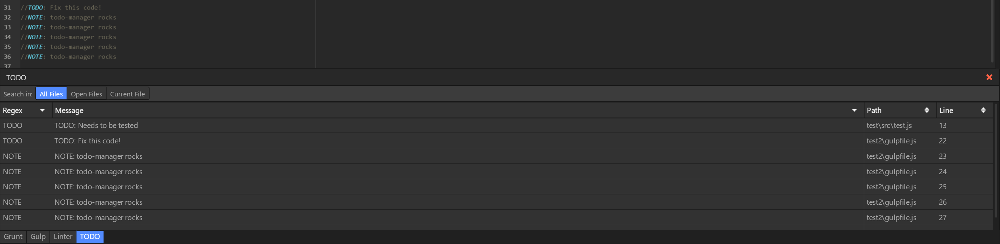

Projects
Bottom-Dock
Bottom-dock is an atom-package for the Atom text editor to simplify the process of creating packages by providing a framework to create panels on the bottom of the editor. Using this framework, I have created 4 packages: Linter-Manager, TODO-Manager, Gulp-Manager and Grunt-Manager. These five packages altogether have amassed over 18,000 downloads.
Click here to view the packagesH1Z1Atlas.com

H1Z1Atlas.com is an interactive map for the game H1Z1, which displays common points of interest (POIs) in the game. Users can also create groups with friends and add their own custom markers which will be synced to all other members of the group. The website recieved over 300,000 page views in the first month.
Click here to go to the website